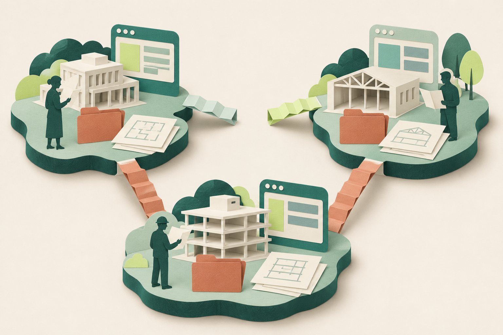
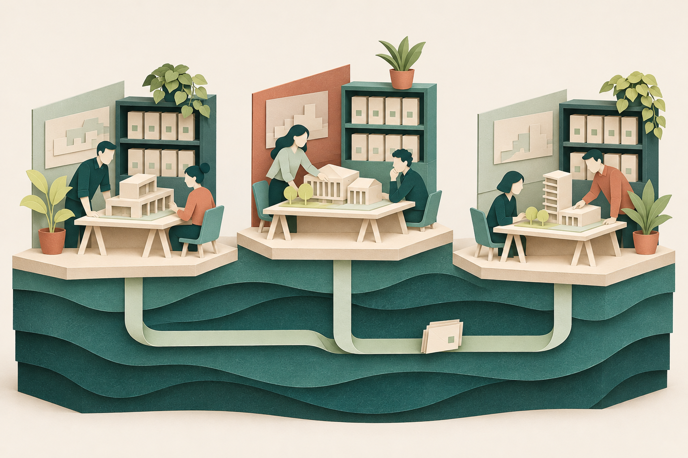

01A vision for project information
Buildings
outlive
software.
Their knowledge should too.
02Today
We work together.
Our information lives apart.
A shared project. A chain of separate worlds.

03The work between the work
Every handoff
asks us to
start again.
Find the file. Check the version. Recover the reason.
04A different kind of handoff
Imagine the
work arriving
with its story.
The version. The inputs. The reason.
05Choice without losing the thread
Teams choose their tools.
The work stays connected.
Bring contributions together. Keep their origins clear.

06More people can shape how they work
An idea becomes
a tool for
the task.
A question. A small application. A useful result.
07The next participant in the workflow
Should agents operate
on software or data?
DataUnderstand
Known versions
→→ResultsLeave a trace
Ready for review
Let the agent follow the work across applications.
08Trust makes participation possible
Open to
the task.
Closed to
everything else.
You decide what can be read, changed, and shared.
09Knowledge that can accumulate
Every project
leaves the
next one
wiser.
Carry forward the reasoning, not just the files.
10The foundation beneath the experience
A common way
to carry
the work.
OCI: open standards beneath independent tools.
11Across the life of a building
Change the tools.
Keep the knowledge.
Design→Build→Use→Adapt
New teams. New questions. A story that continues.
12An invitation to imagine
What could
we build if
the work stayed
connected?
Start with one handoff worth improving.